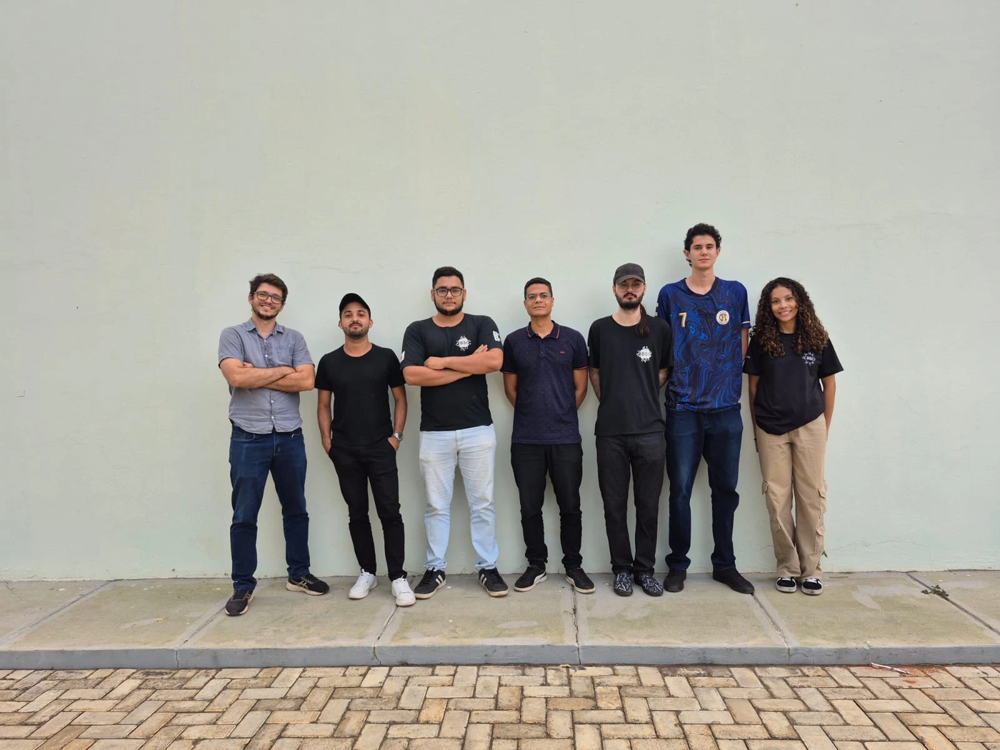

Sobre nós
O Guia Janu é resultado do projeto de extensão “Aplicações de Tecnologia da Informação para o Desenvolvimento do Turismo em Januária/MG”, desenvolvido no Instituto Federal do Norte de Minas Gerais (IFNMG) Campus Januária.
Nossa equipe é formada por estudantes do curso de Bacharelado em Sistemas de Informação e do Programa de Educação Tutorial (PET) do curso de Bacharelado em Administração, contando também com a colaboração de técnicos administrativos e docentes do campus.
Mais do que um projeto acadêmico, o Guia Janu nasce da nossa conexão com Januária e da crença no potencial transformador do turismo para o desenvolvimento local. Acreditamos que valorizar a cultura, a história, a gastronomia, as tradições e as belezas naturais da região é também fortalecer a identidade do nosso povo. Por meio da tecnologia e da inovação, buscamos criar experiências que aproximem visitantes e moradores das riquezas do município, incentivando a descoberta, a preservação e a divulgação do patrimônio januarense.
Estudantes
Curadoria
A curadoria do Guia Janu é composta por docentes e técnicos administrativos do IFNMG - Campus Januária:
- Hélder Seixas Lima – coordenador do projeto (helder.seixas@ifnmg.edu.br)
- Carlos Ceza de Carvalho
- Edson Oliveira Neves
- Eduardo Cabral da Cruz
- Francisco Farlei de Carvalho Lisboa
- Gabrielle Astier de Villatte Wheatley Okretic
- Iza Manuella Aires Cotrim Guimaraes
- Pedro Borges Pimenta Júnior
- Raphael Augusto Vasconcelos Carneiro Nascimento
- Welington dos Santos Silva